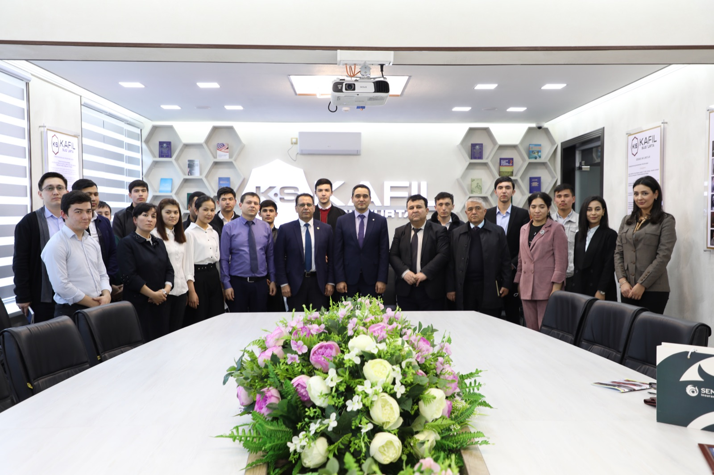
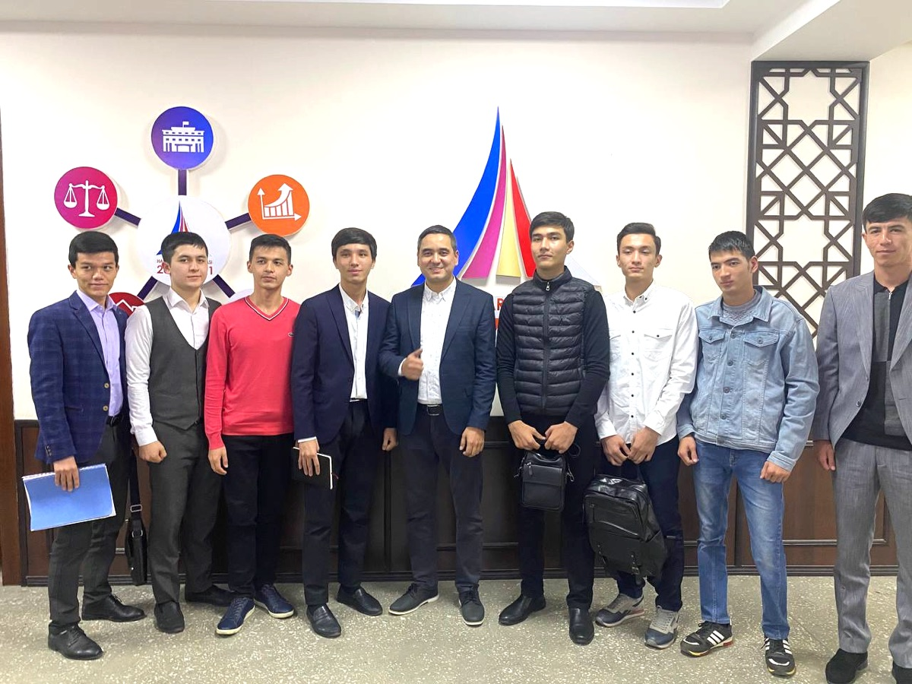
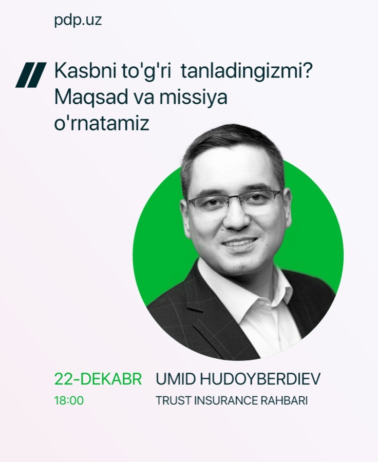

MFaktor Executive Club
Long-standing member and speaker.
Insurance and finance expert
Over 20 years of experience in insurance and business. I write and speak about personal growth, choosing a career, finance and Islamic finance.

About me
For twenty years I have worked in insurance: from state supervision to leading major insurance companies. I received professional training in life insurance in Japan.
I run master classes for students and young people and share my experience as a speaker at business clubs. On my Telegram channel I write about life, family, the value of time, relationships and self-improvement.
Career
Professional activity
Long-standing member and speaker.
Chairman of the Board of Directors of the club for entrepreneurs and business owners.
Speaker.
Organiser. Guests of the forum have included Igor Mann, Michael Bang and Jordan Belfort.
Talks at international conferences and webinars on takaful — Sharia-compliant insurance.
Guest on the TV show broadcast by Toshkent TV.




Master classes
A master class for university and training-centre students. Topics: purpose and mission, the value of time, networking, personal finance, thinking outside the box, mentor and student, lifelong learning, leadership.




The seed fell to the earth and became a flower,
— Alisher Navoi
The silkworm gave its life and became silk.
Have you not the zeal of a tulip seed?
Have you not the generosity of a silkworm?
New articles appear first on the Telegram channel. If you'd like to invite me to give a talk or a master class, get in touch through the channel too.
@umidkhudayberdiev